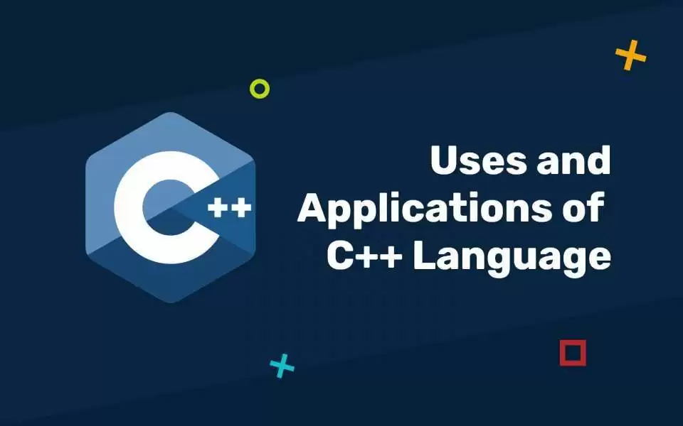

C++
What is C++ ?
C++ is a middle-level programming language that was developed as an extension of the C programming language. In the early 1980s, Bell Labs was an enhancement of the C language to provide support for OOPs (Object Oriented Programming Systems) and additional features.
Why to Learn C++ Programming
Here in this section, we have listed some points to teach you why C++ is important and why you should learn this programming language as a coder :
- C++ supports the principles of OOP (Object Oriented Programming), including classes, objects, inheritance, polymorphism, and encapsulation.
- C++ is an appropriate programming language for systems programming and performance-critical applications. Basically, C programming supports low-level memory manipulation and direct hardware access.
- The STL, or Standard Template Library, in C++, provides a collection of template classes and functions for common data structures and algorithms, which helps simplify and accelerate software development.
- Although C++ is well known for supporting OOP, it also supports procedural and generic programming. This implies that you can write code in a variety of ways, depending on the requirements of your project.
- Developers have the freedom to create their own abstractions thanks to C++’s support for the creation of customized data types and operators.
- The ability to write and compile C++ code to run on different platforms makes it a flexible language for creating cross-platform applications.
- It is widely used in many different fields, such as systems programming, game development, embedded systems, and more. C++ has a sizable and vibrant user community.
Uses of C++ Programming
Like other programming languages, C++ is also a widely used programming language, and here in this section, we are going to discuss the areas where C++ is used.

- Application and Software Development - C++ programming language is widely used in software development. Here are some of the most popular programs developed using C++ like Adobe Photoshop, Thunderbird, MySQL and the backend of Spotify is also developed using C++.
- Operating System Development - C++ is also used to develop major operating systems, like Mac OSX, Linux, and Windows. Apart from OS, C++ is also used to develop major web browsers like Mozilla Firefox and Chrome.
- Development of Games Engines - C++ is executing so fast hence, it is also used to develop gaming engines like Cube, Cry Engine 3.6, Cry Engine 4, 4A Engine, and many more.
Learn more about C++ by clicking on the links below :